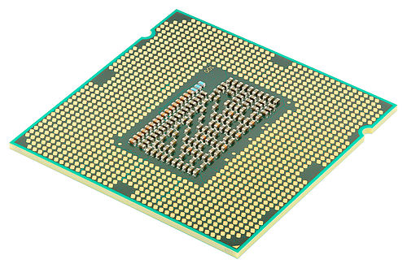
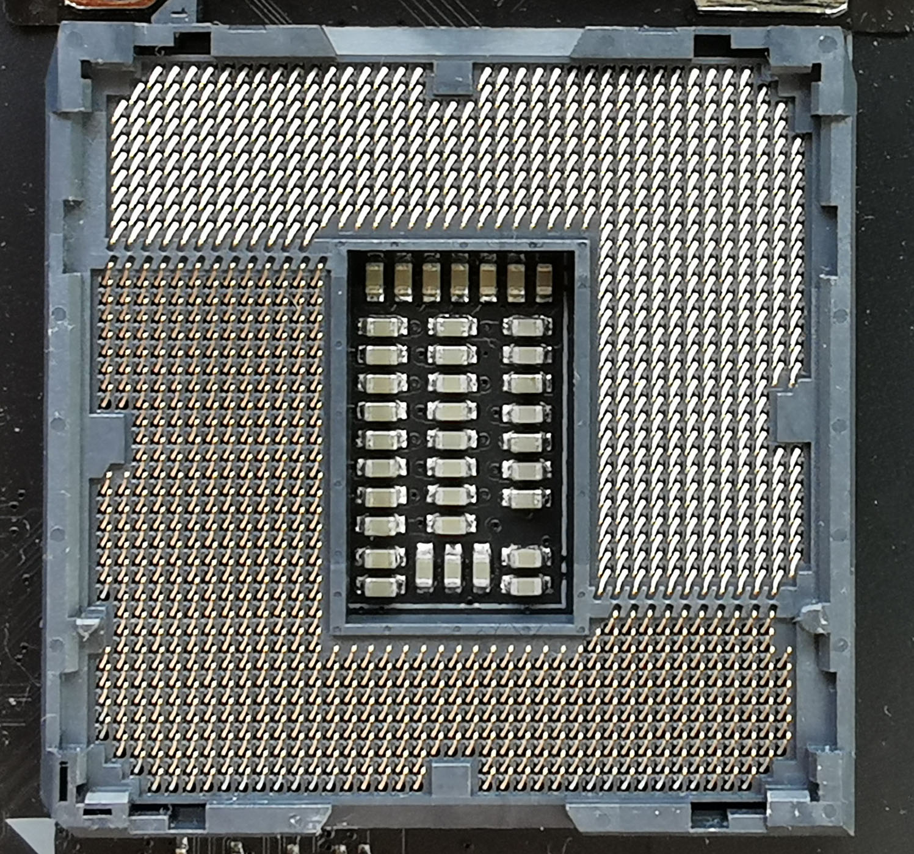
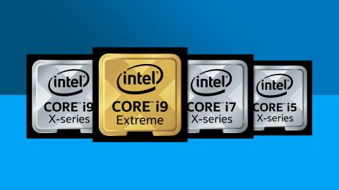

Подробнее про Intel



Подход Intel, по размещению штырьков на материнской плате, а не на чипе, называется Land Grid Array или LGA, что обычно упрощает размещение бо́льшего числа контактов на меньшей площади процессора. Современным процессорам требуется большое количество контактов для их высокоскоростных функций и для обеспечения стабильного питания за счет распределения тока. Другая причина кроется в том, что штырьки очень тонкие и хрупкие, поэтому будет лучше разместить их на материнской плате, нежели чем на ЦПУ.
Рассматриваемые сокеты LGA состоят из ряда штифтов, совпадающих с пластинками на нижней стороне процессора.
Новым процессорам обычно нужен другой набор штифтов, а это значит, что требуется новый сокет.
Однако, в некоторых случаях процессоры с Intel охраняют совместимость с предыдущими поколениями этих процессоров.
Сокет расположен на материнской плате, его нельзя обновить без полной замены платы. ⠀⠀⠀⠀⠀⠀⠀⠀⠀⠀⠀⠀⠀⠀⠀⠀⠀⠀
Каждой категории продукции Intel была присвоена своя цифра. Первыми изделиями Intel стали микросхемы памяти (PMOS-чипы), которым была присвоена нумерация 1xxx. В серии 2xxx разрабатывались микросхемы NMOS. Биполярные микросхемы были отнесены к серии 3xxx. 4-разрядные микропроцессоры получили обозначение 4xxx. Микросхемы CMOS получили обозначение 5xxx, память на магнитных доменах — 7xxx, 8- и более разрядные микропроцессоры и микроконтроллеры принадлежали к серии 8xxx. Вторая цифра обозначала тип продукции. Третья и четвёртая цифры соответствовали порядковому номеру изделия.